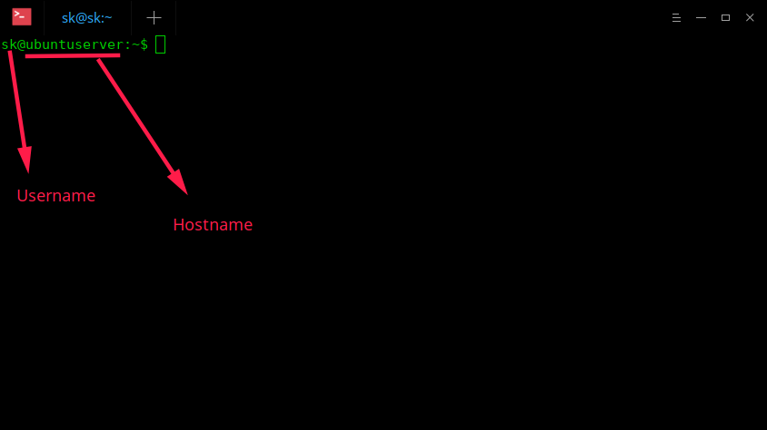
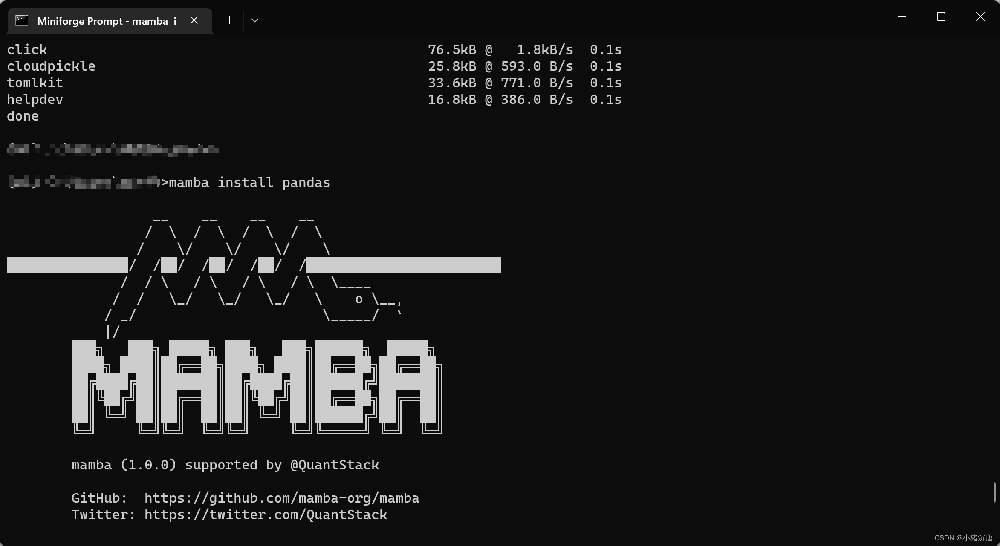

Create a Deep Learning environment on your own system using mamba, and fastai.
Recently, I discovered a fantastic series of recorded live coding sessions by Jeremy Howard from fastai. These sessions are a treasure trove for machine learning and deep learning enthusiasts, offering practical insights and cutting-edge techniques. Inspired by Jeremy’s work, I’ve decided to document my learnings through writing blog posts. My goal is to understand, remember, and share some of the valuable tips and tricks from these sessions with you.
You can explore these amazing sessions here.
I’m using a MacBook Pro, so some steps might differ slightly from Jeremy’s Windows setup. However, the overall process is quite similar, as we’ll be working within a Linux distribution.
Definitions
Terminal and Shell
Let’s start with the terminal. A terminal, also known as a command line interface (CLI), is a text-based interface used to interact with the operating system. It allows us to execute text commands, run scripts, and manage system processes. This is done through a shell, which is a command-line interpreter that understands and executes the commands.
For Mac users, here is the Terminal User Guide to help you get started.
Prompt
When you open the terminal, you’ll see the prompt, which includes your username and the tilde (~) sign. The prompt is a text indicator or symbol that shows the system is ready to accept commands. It usually contains information about the current directory, username, and hostname of the machine. The prompt serves as a visual cue that the terminal is awaiting input.

Mac vs Windows
On a Mac, the terminal is called “Terminal” and is a Unix-based shell, typically using Bash or Zsh, which are powerful for development and system management tasks. Windows traditionally used Command Prompt, which is less feature-rich compared to Unix shells. However, Windows now also includes PowerShell and the Windows Subsystem for Linux (WSL), which provides a more Unix-like environment.
System Setup
If you have a Mac, you can skip the following step as everything is already integrated.
For Windows users, you need to first install Linux with WSL:
On Windows, we use a Linux distribution called Ubuntu, and the shell used is Bash. When you open your terminal for the first time, you need to create a username and password. Then, Ubuntu sets up a new virtual machine.
Understanding Conda and Mamba
Conda and Mamba are package managers that simplify the process of installing and managing software packages, particularly for data science and machine learning projects. They create isolated environments, ensuring that dependencies for different projects do not conflict. For example, when you type which python in your terminal, it typically shows your system’s Python version. Modifying this version of Python is not recommended as it’s used by your computer to run programs on your operating system. Instead, you should install a different version of Python for your use.
In a nutshell, the difference between Conda and Mamba is that Mamba is a faster version of Conda, addressing some of the speed and performance issues related to Conda.
Setting Up Local Machine
As of September 2023, Mambaforge has been discouraged in favor of Miniforge. So, we will use Miniforge for our setup.
With the release of
Miniforge3-23.3.1-0, that incorporated the changes in #277, the packages and configuration ofMambaforgeandMiniforge3are now identical. The only difference between the two is the name of the installer and, subsequently, the default installation directory.
Install Mamba
Visit this link to select the installer for your operating system, copy its link, and move on to the next step.

Open your terminal and run the following commands one after the other:
Once the Miniforge installer is complete, you are asked to close and re-open your shell.
When you do that, you’ll see (base) before the prompt, indicating that you’re inside the environment. To confirm, you can type which python, which will show that you’re now in the Miniforge directory.

The file with the .sh extension is a shell script with commands listed one after another. To see the content of the shell script, type:
To list the contents of your directory in a human-readable format, type:
And to delete a directory, you can use:
Where rm means to remove, -r means recursively, and -f means force. If you want to install everything from scratch, remove the directory and start again.
Create a new Environment
You can create a new environment by typing the following command into the Command Prompt:
This will create a new environment with the name my_first_env and Python version 3.9 installed. Additionally, the latest version of devbio-napari will be installed in this environment. Devbio-napari is a collection of Python libraries and Napari plugins maintained by the BiAPoL team, useful for processing fluorescent microscopy image data. Conda will ask for your permission to download the needed packages with Proceed [y]/n. By hitting Enter, you confirm this, and Mamba will download and install the necessary packages.
To activate the environment, type:
Install Packages with Mamba
IPython
Now you need to install libraries. One such library is IPython (Interactive Python), which works on the model known as REPL — Read-Eval-Print-Loop.
Pytorch
For Pytorch you can select your preferences from here and then run the corresponding install command.

Jupyter
To run Jupyter Notebook, simply type:
The above command will work just fine on Mac. On Windows you might face with an error. To fix that, you can Ctrl + click on the link or use the — no-browser.

Installing New Packages
If you want to install new packages while working in your Jupyter notebook, you can:
Open a new Command Prompt window.
Activate your current environment.
Install packages by specifying the channel with
-c conda-forge.
For example, if you want to install seaborn, type:
Final Words
In this quick tutorial, we have successfully installed Miniforge. I hope the instructions were clear and easy to follow. If you need more detailed steps and additional tips on using the terminal, you can always refer back to the original video linked above.
On another note, I should add that Jeremy is a fantastic instructor, and I highly recommend watching his videos to deepen your understanding of data science and machine learning concepts. His hands-on approach and clear explanations make complex topics accessible and engaging. Dive in and start learning from one of the best!
Now, it’s time for you to start experimenting with Conda environments, familiarize yourself with some essential packages, and build some awesome projects. Happy coding!